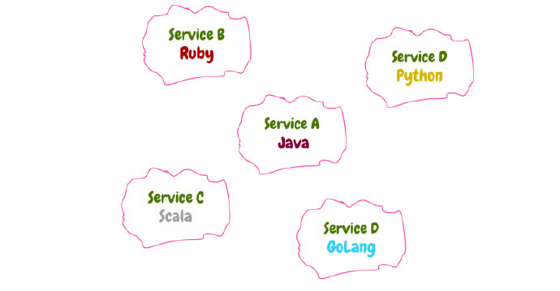
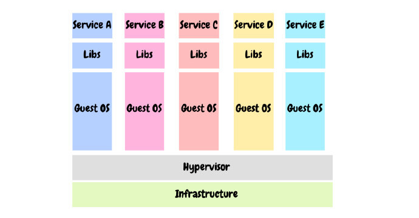
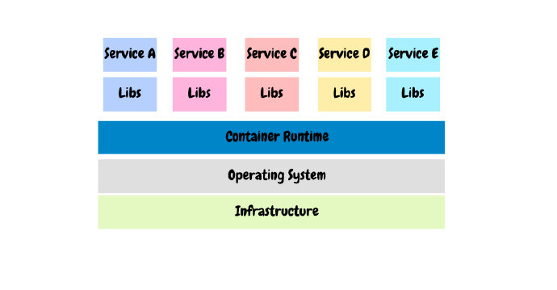
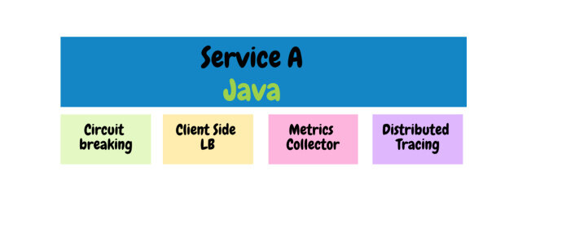
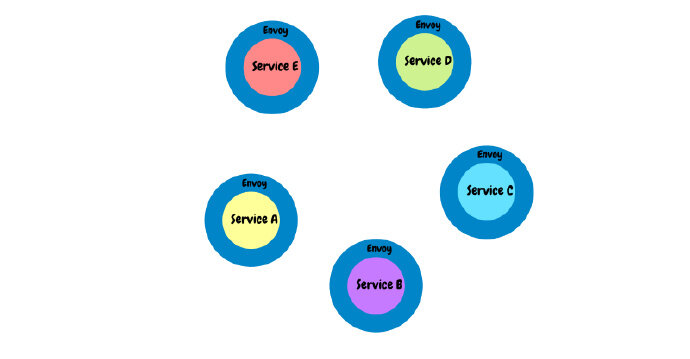

<!DOCTYPE html>

<html lang="zh-cn"><head>
  <meta charset="utf-8">
  
  <title>为什么要选择Service Mesh？ | 云原生社区</title>
  

  <!-- mobile responsive meta -->
  <meta name="viewport" content="width=device-width, initial-scale=1, maximum-scale=1">
  <meta name="description" content="本文讲述互联网应用演进过程，Service Mesh能带来什么好处">
  
  <meta name="author" content=" 云原生社区">
  <meta name="generator" content="Hugo 0.65.3" />

  <!-- plugins -->
  
  <link rel="stylesheet" href="/plugins/bootstrap/bootstrap.min.css">
  
  <link rel="stylesheet" href="/plugins/slick/slick.css">
  
  <link rel="stylesheet" href="/plugins/fontawesome/all.css">
  
  <link rel="stylesheet" href="/plugins/animate/animate.css">
  
  <link rel="stylesheet" href="/plugins/venobox/venobox.css">
  

  <!-- Main Stylesheet -->
  
  <link rel="stylesheet" href="/scss/style.min.css" media="screen">

  <!--Favicon-->
  <link rel="shortcut icon" href="/images/favicon.png " type="image/x-icon">
  <link rel="icon" href="/images/favicon.png " type="image/x-icon">
  <meta property="og:image" content="https://cloudnative.to/images/favicon.png">
  <!--Algolia-->
  <link rel="stylesheet" href="https://cdn.jsdelivr.net/npm/docsearch.js@2.6.3/dist/cdn/docsearch.min.css">
  <!--Twitter card-->
  <meta name="twitter:card" content="summary_large_image" />
  <meta name="twitter:site" content="Cloud Native Community|云原生社区" />
  <meta name="twitter:creator" content="@CloudNativeCN" />
  <meta property="og:url" content="https://cloudnative.to/blog/why-is-service-mesh/" />
  <meta property="og:title" content="为什么要选择Service Mesh？" />
  <meta property="og:description" content="本文讲述互联网应用演进过程，Service Mesh能带来什么好处" />
  <meta property="og:image" content="https://cloudnative.to/images/blog/006tNbRwly1fx5dtjdrmbj31ji15mqva.jpg" />
</head>
<body>
<!-- header -->


<div style='margin:0 auto;width:0px;height:0px;overflow:hidden;'>
     
</div>
<header>
  

  <!-- navigation -->
  <div class="navigation bg-white position-relative">
    <div class="container">
      <nav class="navbar navbar-expand-lg navbar-light bg-white">
        <a class="navbar-brand" href="/"></a>
        <button class="navbar-toggler border-0" type="button" data-toggle="collapse" data-target="#navigation"
          aria-controls="navigation" aria-expanded="false" aria-label="Toggle navigation">
          <span class="navbar-toggler-icon"></span>
        </button>

        <div class="collapse navbar-collapse text-center" id="navigation">
          <ul class="navbar-nav ml-auto">
            <li class="nav-item">
              <a class="nav-link" href="/"></a>
            </li>
            
            
            <li class="nav-item">
              <a class="nav-link" href="/blog/">博客</a>
            </li>
            
            
            
            <li class="nav-item">
              <a class="nav-link" href="/community/sig/">兴趣小组</a>
            </li>
            
            
            
            <li class="nav-item">
              <a class="nav-link" href="/contribute">投稿</a>
            </li>
            
            
            
            <li class="nav-item">
              <a class="nav-link" href="/job">招聘</a>
            </li>
            
            
            
            <li class="nav-item dropdown">
              <a class="nav-link dropdown-toggle" href="#" role="button" data-toggle="dropdown" aria-haspopup="true"
                aria-expanded="false">
                社区
              </a>
              <div class="dropdown-menu" >
                
                <a class="dropdown-item" href="/team">管理委员会</a>
                
                <a class="dropdown-item" href="/academy/">云原生学院</a>
                
                <a class="dropdown-item" href="/city">城市站</a>
                
                <a class="dropdown-item" href="/community/">社区资料</a>
                
              </div>
            </li>
            
            
            
            <li class="nav-item dropdown">
              <a class="nav-link dropdown-toggle" href="#" role="button" data-toggle="dropdown" aria-haspopup="true"
                aria-expanded="false">
                资料
              </a>
              <div class="dropdown-menu" >
                
                <a class="dropdown-item" href="http://landscape.opensourcecloud.cn/">云原生生态图景</a>
                
                <a class="dropdown-item" href="/kubebuilder">Kubebuilder 中文文档</a>
                
                <a class="dropdown-item" href="/envoy">Envoy 中文文档</a>
                
                <a class="dropdown-item" href="https://istio.io/latest/zh/">Istio 中文文档</a>
                
              </div>
            </li>
            
            
          </ul>

          
          

          
          
          <!-- get start btn -->
          <a href="/contact" class="btn btn-primary hover-ripple">加入我们</a>
          
        </div>
      </nav>
    </div>
  </div>
  <!-- /navigation -->
</header>
<!-- /header -->

	<!-- page title -->
<section class="section bg-cover overlay" style="background-image: url('/'),url('/'),url('/images/backgrounds/page-title-5.jpg');">
  <div class="container">
    <div class="row">
      <div class="col-12">
        <h2 class="text-white mb-3 text-capitalize">为什么要选择 service mesh？</h2>
        <!-- breadcrumb -->
        
        <p class="text-white">本文讲述互联网应用演进过程，Service Mesh能带来什么好处</p>
      </div>
    </div>
  </div>
</section>
<!-- /page title -->

	

<!-- blog details -->
<section class="section">
  <div class="container blog">
    <div class="row">
      <div class="col-lg-8">
        <!-- post thumb -->
        <div class="position-relative mb-5">
          
           <div class="card-type"><a href="/categories/service-mesh">Service Mesh</a></div>
        </div>
        <div class="card-meta mb-2">作者  <strong class="text-dark">[shiva]（https://medium.com/@tak2siva）</strong>
          
          译者
          <strong class="text-dark">
          詹叶
          </strong>
          
            发表于 <strong class="text-dark">2018年11月8日</strong></div>
        <hr>
        <div class="content">
          <p>本文为翻译文章，<a href="https://medium.com/@tak2siva/why-is-service-mesh-8ebcd6ed9eb5">点击查看原文</a>。</p>
<p>除非你长期与世隔绝，否则你应该听说过Kubernetes，他已经称为高速发展的互联网公司的一条准则。最近又有一个热门话题&ndash;Service Mesh（服务网格），它已经被这些高速发展公司用来解决一些特定的问题。所以如果你想了解什么是Service Mesh，接下来我可以给你一个更好的解释。</p>
<p></p>
<h3 id="互联网应用的演进">互联网应用的演进</h3>
<p>为了理解Sevice Mesh的重要性，我们通过四个阶段来简短的回顾下互联网应用的发展历程。</p>
<h4 id="阶段0单体应用">阶段0：单体应用</h4>
<p></p>
<p>还记得那些年吗？所有的代码库都打包成一个可执行和部署的软件包。当然，至今在某些使用场景下这个方式依然是很管用的。但是对于一些业务快速增长的互联网公司，在应用的可扩展性、快速部署和所有权等方面遇到了阻力。</p>
<h4 id="阶段1微服务">阶段1：微服务</h4>
<p>微服务的思思想很简单，依照SLA（服务等级协议）将单体应用拆分成多个模块。这种方式运行效果显著，所以广泛为企业所接受。现在，每个团队都用他们喜爱的语言、框架等自由地设计他们的微服务。然后它开始看起来就像下面这样。</p>
<p></p>
<p>我们曾经在我的一个项目中开玩笑说，那里有各种语言的微服务:)</p>
<p>尽管微服务解决了单体应用的一些问题，但现在公司有一些严重问题。</p>
<ul>
<li>为每个微服务定义VM（虚拟机）规范</li>
<li>维护系统级别依赖操作系统版本、自动化工具（如chef）等</li>
<li>监控每个服务</li>
</ul>
<p>对负责构建和部署的人来说这就是一个噩梦。</p>
<p></p>
<p>而且这些服务在虚拟机中共享同一个OS，但为了达到可移植性，服务之间需要隔离或者被封装到独立的VM镜像。微服务典型的架构设计如下图所示：</p>
<p></p>
<p>但为每个服务/副本安装在一台独立的虚拟机上，花费是非常高的。</p>
<h4 id="阶段2容器化">阶段2：容器化</h4>
<p>容器是利用Linux中的 <a href="https://en.wikipedia.org/wiki/Cgroups">cgroups</a> 和 <a href="https://en.wikipedia.org/wiki/Linux_namespaces">namespace</a> 的一种新的操作系统级别的虚拟化技术，通过共享主机的操作系统，实现为不同的应用隔离运行环境的。Docker是目前最流行的容器运行时。</p>
<p>所以我们会为每个微服务创建一个容器镜像并以容器形式发布成服务。这样不仅可以在一个操作系统上实现应用运行环境的隔离，而且启动新的容器相比于启动新的VM速度更快、成本也更低！使用容器技术之后的微服务设计看起来就像这样。</p>
<p></p>
<p>容器化解决了构建和部署的问题，但还没有完美的监控解决方案！那要怎么办？我们还有其他问题吗？管理容器！</p>
<p>使用容器运行一个可靠的基础设施层需要注意以下几个重要的点：</p>
<ul>
<li>容器的可用性</li>
<li>生成容器</li>
<li>扩容/缩容</li>
<li>负载均衡</li>
<li>服务发现</li>
<li>调度容器到多个主机</li>
</ul>
<h4 id="阶段3容器编排">阶段3：容器编排</h4>
<p></p>
<p>Kubernetes是当下最流行的容器编排工具，它彻底改变了我们对基础设施的看法。Kubernetes侧重于健康检查，可用性，负载均衡，服务发现，扩展性，跨主机调度容器等等，很神奇！</p>
<p>我们要的就是这样吗？</p>
<p>并不完全是，仅仅这样还不能解决在微服务阶段提到的服务监控/观测的问题。这只是冰山一角。微服务是分布式的，所以管理微服务不是件容易的事。</p>
<p>我们需要考虑一些最佳实践来便捷地运行微服务。</p>
<ul>
<li>Metrics（延迟，成功率等）</li>
<li>分布式链路追踪</li>
<li>客户端负载均衡</li>
<li>熔断</li>
<li>流量迁移</li>
<li>限速</li>
<li>访问日志</li>
</ul>
<p>像Netflix这样的公司已经推出了几种工具，并接受了那些运行微服务的做法。</p>
<ul>
<li>Netflix Spectator（Metrics）</li>
<li>Netflix Ribbon（客户端负载均衡/服务发现）</li>
<li>Netflix Hystrix（熔断器）</li>
<li>Netflix Zuul（边界路由）</li>
</ul>
<p>现在，为了满足这些最佳实践的唯一方法是在每个微服务上使用一个客户端库来解决每个问题。所以每个服务的结构看起来就像这样。</p>
<p></p>
<p>但这是针对像Service A这样的用JAVA写的服务，那其他的服务要怎么办？
如果我使用其他语言没有类似java的库要怎么办？
怎样才能让所有团队使用/维护/升级库版本？
我们公司有上百个服务，我要修改所有应用都使用上面的库吗？</p>
<p>发现了吗？自微服务诞生以来，这些一直都是个问题（语言限制、应用代码改造）。</p>
<h4 id="阶段4服务网格">阶段4：服务网格</h4>
<p>目前有多种代理为Service Mesh提供解决方案，如：<a href="https://www.envoyproxy.io/">Envoy</a>、Linkerd和Nginx。本文只关注Envoy的Service Mesh。</p>
<p>Envoy是针对微服务产生的这些问题设计出来的服务代理。</p>
<p>Envoy能够作为 <a href="https://docs.microsoft.com/en-us/azure/architecture/patterns/sidecar">SideCar</a> 运行在每个应用的旁边，形成抽象的应用网络。当基础设施中的所有服务流量通过Envoy网格流动时，通过一致的可观察性来问题区域变得容易。</p>
<p>如下图所示，当把Envoy作为SideCar添加到服务后，所有微服务的入站和出站流量都通过各自的Envoy代理</p>
<p></p>
<p>Envoy拥有许多方便的功能</p>
<ul>
<li>支持HTTP,HTTP/2和gRPC</li>
<li>健康检查</li>
<li>负载均衡</li>
<li>Metrics</li>
<li>追踪</li>
<li>访问日志</li>
<li>熔断</li>
<li>重试策略</li>
<li>超时配置</li>
<li>限速</li>
<li>支持Statsd、Prometheus</li>
<li>流量迁移</li>
<li>通过发现服务来动态调整配置（XDS）</li>
</ul>
<p>等……</p>
<p>所以通过从服务中抽象出整个网络，使用Envoy作为SideCar形成网格组成数据平面，允许我们控制上面列出的能力。</p>
<p>欢迎反馈，谢谢！</p>

        </div>
        <!-- tags -->
        <div class="mb-3">
          <h5 class="d-inline-block mr-3">Tags:</h5>
          <ul class="list-inline d-inline-block">
            <a>
            <li class="list-inline-item"><a class="text-color" href="/tags/docker"> 
            Docker</a>
            <a>
            <li class="list-inline-item"><a class="text-color" href="/tags/microservices"> , 
            MicroServices</a>
            <a>
            <li class="list-inline-item"><a class="text-color" href="/tags/kubernetes"> , 
            Kubernetes</a>
            <a>
            <li class="list-inline-item"><a class="text-color" href="/tags/monitoring"> , 
            Monitoring</a>
            <a>
            <li class="list-inline-item"><a class="text-color" href="/tags/service-mesh"> , 
            Service Mesh</a>
            
          </ul>
        </div>
        <!-- previous -->
        
<div class="col-12">
<ul class="pager blog-pager">

<li class="previous">
<a href="https://cloudnative.to/blog/evaluation-of-serverless-frameworks-for-kbe/" data-toggle="tooltip" data-placement="top" title="Kubernetes 的无服务器框架的评估">&larr; 上一篇</a>
</li>
 
<li class="next">
<a href="https://cloudnative.to/blog/envoy-grpc-and-rate-limiting/" data-toggle="tooltip" data-placement="top" title="Envoy，gRPC和速率限制">下一篇 &rarr;</a>
</li>

</ul>
</div>


        <!-- previous -->

        <!-- recommend -->
        

<div class="mb-3">
  <h2>文章推荐</h2>
  <ul class="related">
  
    <li><a href="/blog/evaluation-of-serverless-frameworks-for-kbe/">Kubernetes 的无服务器框架的评估</a></li>
  
    <li><a href="/blog/sre-resiliency-bolt-on-sidecar-rate-limiting-with-envoy-sidecar/">SRE 弹性能力：使用 Envoy 对应用进行速率限制</a></li>
  
    <li><a href="/blog/service-mesh-architectures-inevitable/">服务网格的未来Part 1：服务网格架构是必然趋势并愈加重要</a></li>
  
    <li><a href="/blog/does-the-service-mesh-spell-the-end-for-middleware/">服务网格是中间件的终结者吗？</a></li>
  
    <li><a href="/blog/manipulating-istio-and-other-custom-kubernetes-resources-in-golang/">使用Go语言操作Istio和其他Kubernetes CRD</a></li>
  
  </ul>
</div>


        <!-- comments -->

        
        <div id="gitalk-container"></div>
        <link rel="stylesheet" href="https://cdn.jsdelivr.net/npm/gitalk@1/dist/gitalk.css">
        <script src="https://cdn.jsdelivr.net/npm/gitalk@1/dist/gitalk.min.js"></script>
        <script>
          window.onload = function() {
              const gitalk = new Gitalk({
              clientID: '0f001988910adcfadfb7',
              clientSecret: '14f7d06ee5e6575c295d18fc11616e8cb60fb84e',
              repo: 'cloudnativeto.github.io',
              owner: 'cloudnativeto',
              admin: ['rootsongjc'],
              id: hex_md5(hex_md5(window.location.pathname + window.location.hash)), 
              distractionFreeMode: false 
            });
            (function() {
              if (["localhost", "127.0.0.1"].indexOf(window.location.hostname) != -1) {
                document.getElementById('gitalk-container').innerHTML = 'Gitalk comments not available by default when the website is previewed locally.';
                return;
              }
              gitalk.render('gitalk-container');
            })();
          }
        </script>
        
      </div>
      <!-- sidebar -->
<aside class="col-lg-4 order-1 order-lg-2">
    <!-- categories -->
<div class="bg-pink px-4 py-5 box-shadow mb-5">
  <h4 class="mb-4">分类</h4>
  <ul class="list-unstyled">
    <li class="border-bottom"><a href="/categories/devops" class="d-block pb-3 mt-3 text-capitalize">Devops</a></li>
    <li class="border-bottom"><a href="/categories/envoy" class="d-block pb-3 mt-3 text-capitalize">Envoy</a></li>
    <li class="border-bottom"><a href="/categories/istio" class="d-block pb-3 mt-3 text-capitalize">Istio</a></li>
    <li class="border-bottom"><a href="/categories/kubernetes" class="d-block pb-3 mt-3 text-capitalize">Kubernetes</a></li>
    <li class="border-bottom"><a href="/categories/serverless" class="d-block pb-3 mt-3 text-capitalize">Serverless</a></li>
    <li class="border-bottom"><a href="/categories/service-mesh" class="d-block pb-3 mt-3 text-capitalize">Service mesh</a></li>
    <li class="border-bottom"><a href="/categories/%e4%ba%91%e5%8e%9f%e7%94%9f" class="d-block pb-3 mt-3 text-capitalize">云原生</a></li>
    <li class="border-bottom"><a href="/categories/%e5%85%b6%e4%bb%96" class="d-block pb-3 mt-3 text-capitalize">其他</a></li>
    <li class="border-bottom"><a href="/categories/%e5%8f%af%e8%a7%82%e5%af%9f%e6%80%a7" class="d-block pb-3 mt-3 text-capitalize">可观察性</a></li>
    <li class="border-bottom"><a href="/categories/%e5%ae%89%e5%85%a8" class="d-block pb-3 mt-3 text-capitalize">安全</a></li>
    <li class="border-bottom"><a href="/categories/%e5%bc%80%e6%ba%90" class="d-block pb-3 mt-3 text-capitalize">开源</a></li>
    <li class="border-bottom"><a href="/categories/%e5%bc%80%e6%ba%90%e7%a4%be%e5%8c%ba" class="d-block pb-3 mt-3 text-capitalize">开源社区</a></li>
    <li class="border-bottom"><a href="/categories/%e6%8c%81%e7%bb%ad%e4%ba%a4%e4%bb%98" class="d-block pb-3 mt-3 text-capitalize">持续交付</a></li>
    <li class="border-bottom"><a href="/categories/%e7%a8%b3%e5%ae%9a%e6%80%a7" class="d-block pb-3 mt-3 text-capitalize">稳定性</a></li>
    <li class="border-bottom"><a href="/categories/%e8%be%b9%e7%bc%98%e8%ae%a1%e7%ae%97" class="d-block pb-3 mt-3 text-capitalize">边缘计算</a></li>
  </ul>
</div>

  <!-- tags -->
  

  <!-- profile -->
  <!-- toc -->
  
  <div class="bg-white px-4 py-5 box-shadow mb-5 sticky-top">
    <h4 class="mb-4">目录</h4>
    <nav id="TableOfContents">
  <ul>
    <li>
      <ul>
        <li><a href="#互联网应用的演进">互联网应用的演进</a></li>
      </ul>
    </li>
  </ul>
</nav>
  </div>

</aside>
<!-- /sidebar -->

    </div>
  </div>
</section>
<!-- /blog details -->


<footer>
  
  <div class="section bg-secondary">
    <div class="container">
      <div class="row justify-content-between">
        
        <div class="col-lg-5 mb-5 mb-lg-0">
          
          <a class="mb-4 d-inline-block" href="/"></a>
          <p class="text-light mb-5">云原生社区是国内最大的独立第三方云原生终端用户和泛开发者社区，由 CNCF 大使、开源意见领袖共同发起成立于 2020 年 5 月 12 日，提供云原生专业资讯，促进云原生产业发展。</p>
          <h4 class="text-white mb-4">关注我们</h4>
          
          <ul class="list-inline social-icon-alt">
            
            <li class="list-inline-item">
              <a class="hover-ripple" href="https://twitter.com/cloudnativecn"><i class="fab fa-twitter"></i></a>
            </li>
            
            <li class="list-inline-item">
              <a class="hover-ripple" href="https://github.com/cloudnativeto"><i class="fab fa-github"></i></a>
            </li>
            
            <li class="list-inline-item">
              <a class="hover-ripple" href="https://mp.weixin.qq.com/s/vWlSdzz2MNdXRr0sd2-LFg"><i class="fab fa-weixin"></i></a>
            </li>
            
            <li class="list-inline-item">
              <a class="hover-ripple" href="mailto:contact@cloudnative.to"><i class="far fa-envelope"></i></a>
            </li>
            
            <li class="list-inline-item">
              <a class="hover-ripple" href="https://zhuanlan.zhihu.com/cloud-native"><i class="fab fa-zhihu"></i></a>
            </li>
            
            <li class="list-inline-item">
              <a class="hover-ripple" href="https://space.bilibili.com/515485124"><i class="fas fa-play-circle"></i></a>
            </li>
            
            <li class="list-inline-item">
              <a class="hover-ripple" href="https://cloudnative.to/blog/index.xml"><i class="fas fa-rss"></i></a>
            </li>
            
          </ul>
        </div>
        <div class="col-lg-5 mb-5 mb-lg-0">
            
            
            
            
            
            <div class="mb-5 address">
              <h4 class="text-white mb-4">联系信息</h4>
              <p class="text-light mb-3"><a href="/city/beijing">北京</a>|<a href="/city/shanghai">上海</a>|<a href="/city/chengdu">成都</a>|<a href="/city/shenzhen">深圳</a>|<a href="/city/hangzhou/">杭州</a>|<a href="/city/guangzhou/">广州</a>|<a href="https://github.com/cloudnativeto/community/issues/55">武汉</a>|<a href="/city/nanjing">南京</a>|<a href="https://github.com/cloudnativeto/community/issues/61">西安</a>|<a href="/city/dalian">大连</a>|<a href="https://github.com/cloudnativeto/community/issues/52">长沙</a>|<a href="https://github.com/cloudnativeto/community/issues/66">苏州</a>|<a href="https://github.com/cloudnativeto/community/issues/67">珠海</a>|<a href="https://github.com/cloudnativeto/community/issues/78">重庆</a>|<a href="https://github.com/cloudnativeto/community/issues/82">济南</a>|<a href="https://github.com/cloudnativeto/community/issues/83">厦门</a>|<a href="https://github.com/cloudnativeto/community/issues/86">无锡</a>|<a href="https://github.com/cloudnativeto/community/issues/91">青岛</a>|<a href="https://github.com/cloudnativeto/community/issues/103">郑州</a>|<a href="https://github.com/cloudnativeto/community/issues/107">合肥</a></p>
              <p class="text-light mb-3"></p>
              <p class="text-light mb-3">关注云原生社区微信公众号，加入社区并获取最新资讯。</p>
              <p class="text-light mb-3"></p>
            </div>
            
            
        </div>
      </div>
    </div>
  </div>
  
  <div class="bg-secondary-darken py-4">
    <div class="container">
      <div class="row">
        <div class="col-md-6 text-center text-md-left mb-3 mb-md-0">
          <p class="mb-0 text-white">Copyright © 2021 云原生社区</p>
        </div>
        <div class="col-md-6 text-center text-md-right">
          <ul class="list-inline">
            
            <li class="list-inline-item mx-0"><a class="d-inline-block px-3 text-white" href="/policy"
                class="text-white">声明与政策</a></li>
            
          </ul>
        </div>
      </div>
    </div>
  </div>
</footer>


<!-- JS Plugins -->

<script src="/plugins/jQuery/jquery.min.js"></script>

<script src="/plugins/bootstrap/bootstrap.min.js"></script>

<script src="/plugins/slick/slick.min.js"></script>

<script src="/plugins/google-map/gmap.js"></script>

<script src="/plugins/venobox/venobox.min.js"></script>

<script src="/plugins/filterizr/jquery.filterizr.min.js"></script>

<script src="/plugins/search/fuse.min.js"></script>

<script src="/plugins/search/mark.js"></script>

<script src="/plugins/search/search.js"></script>

<script src="/plugins/bigPicture/bigPicture.js"></script>

<script src="/plugins/hex_md5/hex_md5.js"></script>


<!-- Main Script -->

<script src="/js/script.min.js"></script>

<!-- Algolia -->
<script src="https://cdn.jsdelivr.net/npm/docsearch.js@2.6.3/dist/cdn/docsearch.min.js"></script>
<script>
  docsearch({
    apiKey: '870a8addaf7a712ecc6e33ce9def93b1',
    indexName: 'DocSearch',
    appId: '2506Q6I4IV',
    inputSelector: '#js-algolia-btn',
    debug: false,
  });
</script>

<!-- baidu tongji-->

<script>
var _hmt = _hmt || [];
(function() {
  var hm = document.createElement("script");
  hm.src = "https://hm.baidu.com/hm.js?f3dc895ea3bd6186cd835841d365c103";
  var s = document.getElementsByTagName("script")[0];
  s.parentNode.insertBefore(hm, s);
})();
</script>


<!-- google analitycs -->

<script>
  (function (i, s, o, g, r, a, m) {
    i['GoogleAnalyticsObject'] = r;
    i[r] = i[r] || function () {
      (i[r].q = i[r].q || []).push(arguments)
    }, i[r].l = 1 * new Date();
    a = s.createElement(o),
      m = s.getElementsByTagName(o)[0];
    a.async = 1;
    a.src = g;
    m.parentNode.insertBefore(a, m)
  })(window, document, 'script', '//www.google-analytics.com/analytics.js', 'ga');
  ga('create', 'UA-93485976-4', 'auto');
  ga('send', 'pageview');
</script>


</body>

</html>
